vmware install VMDK
It wasn't obvious to me how to add the virtual machine. I was trying to open instead of create a new VM. In VMplayer with a .VMDK file, you have to create a new vm -> then delete the hard drive -> then the downloaded harddrive. Here is each step if needed.
Create new virtual machine and choose “I will install the operating system later”
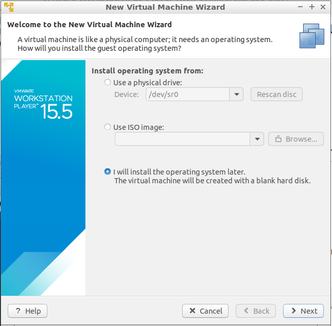
Choose OS
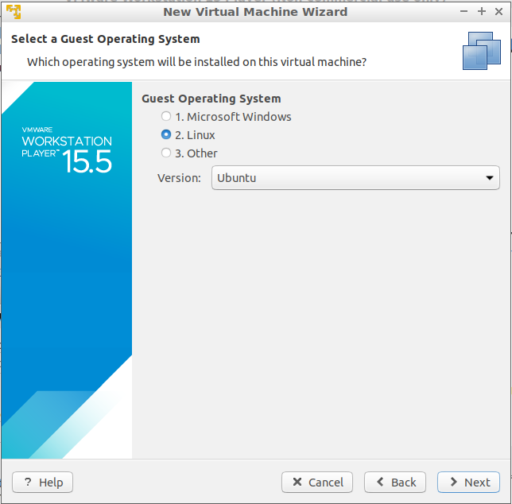
choose location and rename if wanted, but not required

Create a disk. Size doesn't matter, as it is going to be deleted before adding the .VMDK file. leaving it at the default 20 is fine, or it can be lowered if space is an issue.
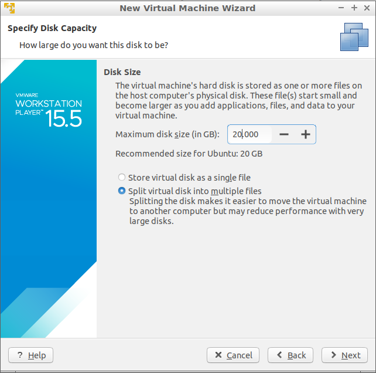
Hit finish or change ram size if needed. I left the default of 2.
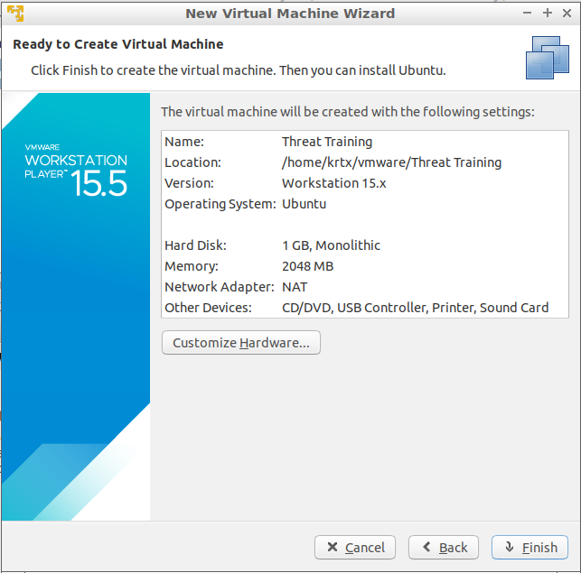
close this screen
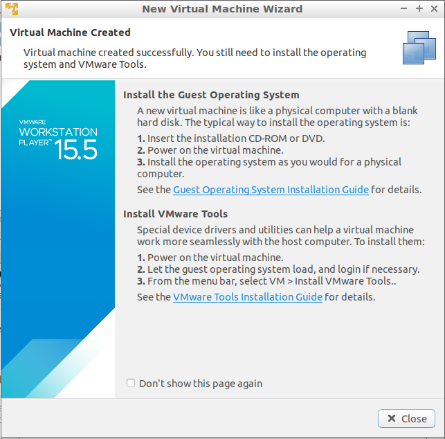
open the virtual machine settings
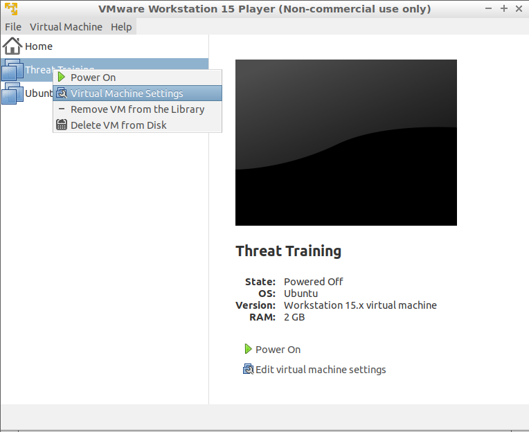
choose hard disk and hit next
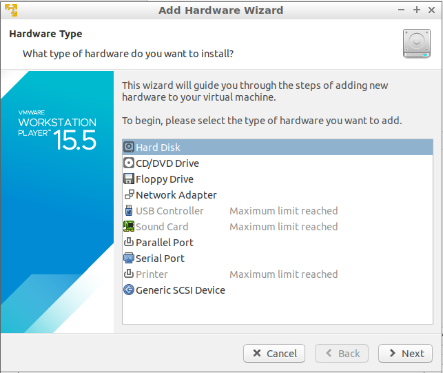
choose SCSI
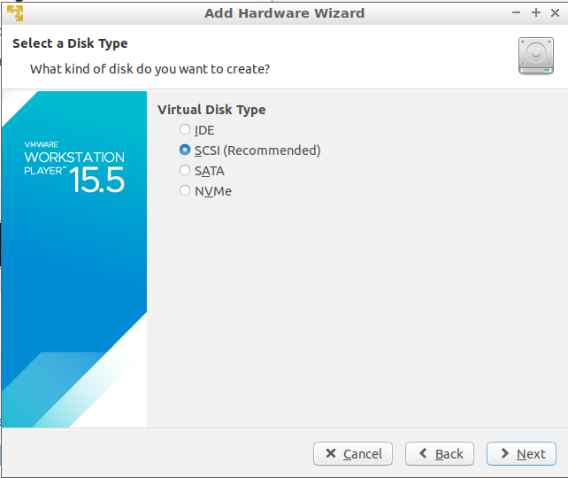
Choose Use an existing virtual disk
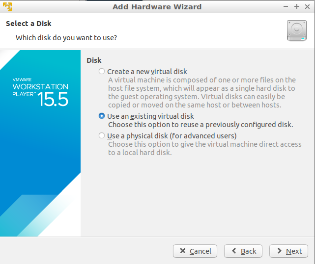
browse to the smaller of the two .VMDK files and open it. Trying to open the larger file will result in an error message. “The file specified is not a virtual disk”
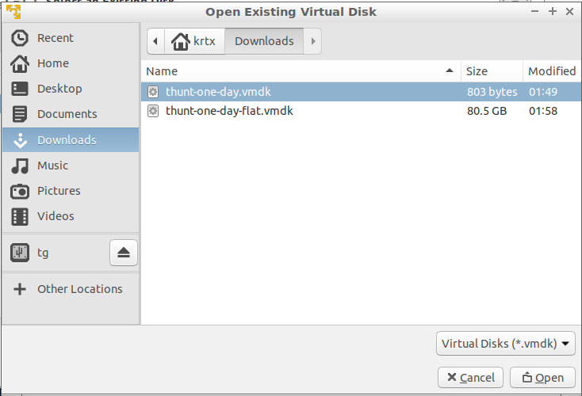
click finish, and then you can keep existing format.
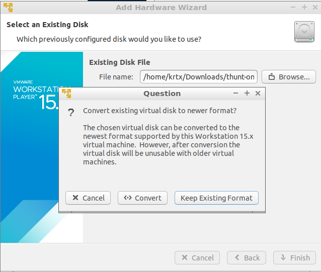
click save and you are done
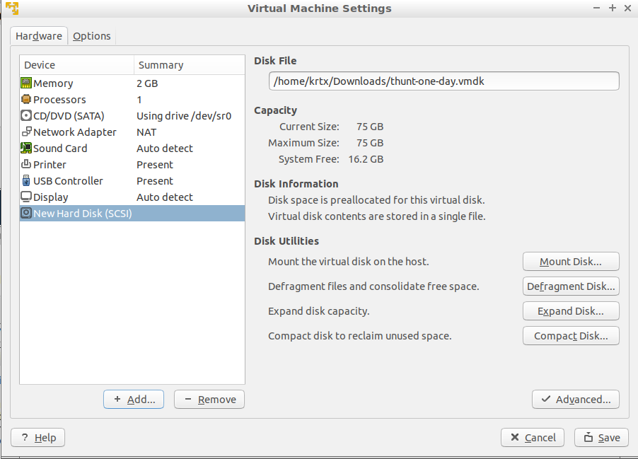
Now you should be able to run your VM.